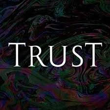

These are all of the reflections that I have done so far.
My reflection to the quote is that if the people you hang out with are not benefiting you in any way, shape, or form, then you won’t gain anything from hanging out with those people. Another reflection to the quote that I have is that if those people that you hanging out with that are not benefiting you, you might feel scared to branch out and find new friends, like your stuck in a cage. That is my reflection on the topic.
To me, to be a man is to be able to hold yourself accountable for your actions. To be able to protect the things that you love. To be able to own up to your mistakes and take ownership and responsibility. That is my reflection to the module.
Community norms are important because they are like laws that we have to follow. Without the community norms, the place would be all crazy. Community norms are basically just rules or laws we have to follow, but if we do not follow them, there is a consequence. That is my reflection to this quote.
My reflection to the module is that I like how were setting up opportunities for future jobs. I also like how were making money. I also like how were going on business trips. That is my reflection to the module.

To trust someone is to be able to rely on them with certain things (your dog, your house, etc.) You can trust them to not mess things up or stuff like that. You can also trust someone by trusting them with your life, for example, if your friend is driving, you trust them to not crash. That is my reflection to this.
These are the module reflections I have done.